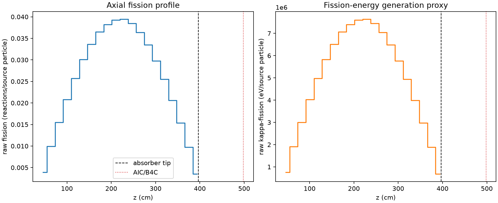
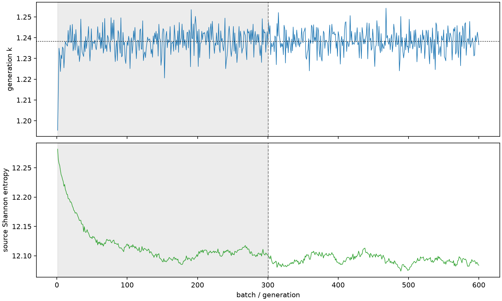

| field | value |
|---|---|
| experiment | V2-STAGE_128_OGRENCI_02-0021 |
| k | 1.2382611685224758 |
| MC standard error | 0.00019478653146439654 |
| seconds | 984.0055784670003 |
| acceptance | not_assessed |
| convergence | review_required |
Completed is output integrity only; physical and statistical review required. Zero tallies do not prove zero production or zero uncertainty.
| diagnostic | value |
|---|---|
| geometric fuel voxels | 5280 |
| zero fission tally voxels | 0 |
| low signal fuel voxels | 0 |
| low signal fission share | 0.0 |
| low signal kappa share | 0.0 |
| important fission share | 0.9500595749080613 |
| previous filter included | 5280 |
| duration estimate s | 1562.5173488400023 |
| actual minus estimate s | -578.511770373002 |
| fission relative MC error | statistics |
|---|---|
| all_geometric_fuel | {"voxels": 5280, "positive_mean_voxels": 5280, "zero_mean_voxels": 0, "undefined_relative_error_voxels": 0, "median": 0.010205082064820827, "p95": 0.027338583227481946, "maximum": 0.03475015443519196} |
| low_signal | {"voxels": 0, "positive_mean_voxels": 0, "zero_mean_voxels": 0, "undefined_relative_error_voxels": 0, "median": null, "p95": null, "maximum": null} |
| important_95pct | {"voxels": 4270, "positive_mean_voxels": 4270, "zero_mean_voxels": 0, "undefined_relative_error_voxels": 0, "median": 0.009600480713101187, "p95": 0.013961636673635763, "maximum": 0.01782600195917803} |
| outside_previous_filter | {"voxels": 0, "positive_mean_voxels": 0, "zero_mean_voxels": 0, "undefined_relative_error_voxels": 0, "median": null, "p95": null, "maximum": null} |
| kappa_fission relative MC error | statistics |
|---|---|
| all_geometric_fuel | {"voxels": 5280, "positive_mean_voxels": 5280, "zero_mean_voxels": 0, "undefined_relative_error_voxels": 0, "median": 0.010193341863531583, "p95": 0.027307202449721322, "maximum": 0.03470844084309763} |
| low_signal | {"voxels": 0, "positive_mean_voxels": 0, "zero_mean_voxels": 0, "undefined_relative_error_voxels": 0, "median": null, "p95": null, "maximum": null} |
| important_95pct | {"voxels": 4270, "positive_mean_voxels": 4270, "zero_mean_voxels": 0, "undefined_relative_error_voxels": 0, "median": 0.009590583340369038, "p95": 0.013947654050050915, "maximum": 0.01780930312381677} |
| outside_previous_filter | {"voxels": 0, "positive_mean_voxels": 0, "zero_mean_voxels": 0, "undefined_relative_error_voxels": 0, "median": null, "p95": null, "maximum": null} |
| axial bin | fission share | kappa-fission share |
|---|---|---|
| 1 | 0.007768859243335587 | 0.007769218505104607 |
| 2 | 0.019575758642312667 | 0.01957567154353137 |
| 3 | 0.030619691846485445 | 0.030619751226968833 |
| 4 | 0.04109998475572461 | 0.041099993404218625 |
| 5 | 0.05088766810715696 | 0.0508876854767686 |
| 6 | 0.059453168533799956 | 0.059453084623259496 |
| 7 | 0.06652138086136994 | 0.06652135291546615 |
| 8 | 0.07214980137465575 | 0.07214958989542308 |
| 9 | 0.07555467950107213 | 0.07555469338584465 |
| 10 | 0.07759831633475563 | 0.07759830182587384 |
| 11 | 0.07795204665290106 | 0.07795183788681083 |
| 12 | 0.07603482236109958 | 0.07603469004976449 |
| 13 | 0.07198758817520935 | 0.07198745106033477 |
| 14 | 0.06624035871656864 | 0.0662402044694221 |
| 15 | 0.05890929772152941 | 0.05890945704614504 |
| 16 | 0.05039126732579648 | 0.05039119957938467 |
| 17 | 0.0407378830792561 | 0.04073780165559748 |
| 18 | 0.030338612786673307 | 0.03033861417193965 |
| 19 | 0.019208767472363098 | 0.01920879207964381 |
| 20 | 0.006970046507934309 | 0.006970609198497969 |
Histories include the inactive-to-active transition at batch 300. kappa-fission approximates fission energy production, not total heat deposition.

